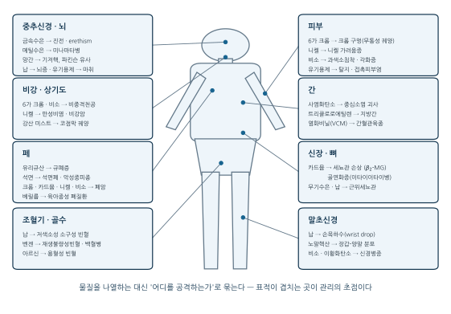
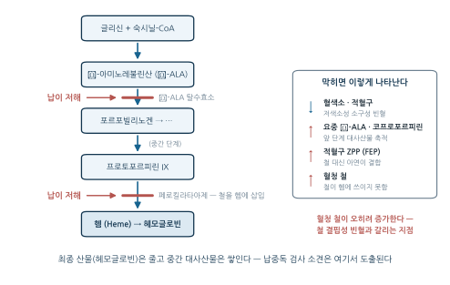
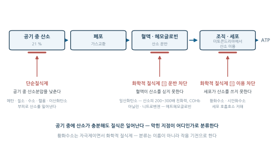
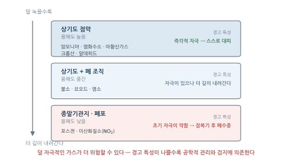
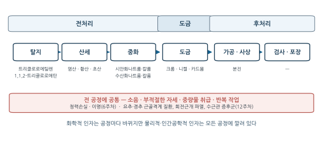
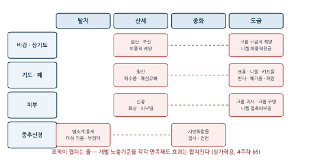

5주차. 산업독성학 II — 주요 화학물질과 건강장해
중금속·유기용제·분진·가스상 물질의 표적장기와 특징적 건강장해, 그리고 직업성 암
학습목표
이 주를 학습한 후 여러분은 다음을 할 수 있어야 합니다:
- 주요 중금속(납·수은·카드뮴·크롬·망간·비소)의 표적장기와 특징적 건강장해를 설명하고, 증례의 임상 소견에서 원인 금속을 추론할 수 있다
- 유기용제의 공통 독성(중추신경 억제, 피부 탈지)과 대표 물질별 특이 독성(벤젠·톨루엔·노말헥산·메탄올·이황화탄소)을 구분할 수 있다
- 진폐증의 발생 기전과 분류를 설명하고, 규폐증·석면폐증·탄광부진폐증의 특징과 석면 관련 질환의 스펙트럼을 비교할 수 있다
- 가스상 물질을 단순질식제·화학적 질식제·자극제로 분류하고, 대표 물질(CO, H₂S, HCN, 암모니아, 염소, 포스겐)의 작용 기전과 위험 특성을 설명할 수 있다
- 대표적 직업성 암과 원인물질의 대응 관계를 설명할 수 있다
- 전기도금처럼 여러 유해인자가 공존하는 공정에서 공정별 유해인자와 겹치는 표적장기를 파악하고, 관리 위계의 틀로 대책을 정리할 수 있다
1. 물질 각론을 보는 틀 — 표적장기와 특이적 대응 · 중금속과 건강장해
1.1 물질 각론을 보는 틀 — 표적장기와 특이적 대응
4주차의 일반 원리(용량-반응, ADME, 역치와 비역치)가 실제 물질에서 어떻게 나타나는지를 다룬다. 각론을 관통하는 축은 세 가지다.
- 표적장기(target organ) — 흡수된 물질은 분포·대사·축적의 특성에 따라 특정 장기에 손상을 집중시킨다 (납→조혈기·신경, 카드뮴→신장, 벤젠→골수).
- 특이적 대응 — 악성중피종은 사실상 석면에서만, 비중격천공은 6가 크롬 (및 비소)에서, 파킨슨 유사 보행장해는 망간에서 나타난다. 이 대응이 직업병 진단의 강력한 단서이자 직업병 인정 요건 판단(1주차)의 출발점이다.
- 화학적 형태 — 같은 원소라도 형태가 독성을 결정한다. 수은은 금속·무기·유기 형태에 따라 표적장기가 달라지고, 크롬은 원자가에 따라 필수 영양소(3가)와 1급 발암물질(6가)로 갈린다.

그림 6.1 이 이번 주의 지도다. 중금속(§1.2)·유기용제(§2)·분진(§3)·가스(§4)를 물질군 순서로 배우되, 머리에 남겨야 할 것은 표적별로 다시 묶은 이 그림이다. 분진(§3)은 폐 항목에, 가스(§4)는 산소 공급·이용의 차단이라는 별도의 축에 놓이고, 직업성 암(§5)은 각 표적장기의 가장 무거운 결과로 나타난다. 마지막 §6의 전기도금은 이 물질들이 한 공정에 함께 있는 곳이다.
1.2 중금속과 건강장해
금속 노출의 공통 특징
대부분의 금속과 금속염은 고체이므로, 작업장 노출은 주로 분진·흄·미스트 등 입자상 물질의 흡입으로 일어난다. 개인위생이 불량하면 흡연·식사 중 손-입 접촉을 통한 경구 섭취도 무시할 수 없고, 수은염·유기금속 화합물처럼 피부로 흡수되는 물질도 있다. 예외적으로 수은(Hg)과 아르신(AsH₃) 같은 금속 수소화물은 증기압이 높아 증기 상태로 흡입된다. 또 하나의 공통 원리는 “생명의 창(window of life)” — 철·아연·구리 같은 금속은 적정 농도에서는 필수적이지만 결핍되어도 과잉되어도 해롭다(파라셀수스의 원리, 4주차).
납 (Lead, Pb) — 조혈기와 신경
납은 인류가 최초로 제련한 금속의 하나이며, 역사상 최초로 기록된 직업병도 납중독이다(히포크라테스의 광부 기록, 1주차). 현대의 주요 노출원은 축전지 제조·재활용, 납땜, 구형 납 페인트 제거, 탄약·사격장, PVC 안정제 등이다.
독성 기전 — 헴 합성 경로의 차단
납 독성의 핵심 기전은 헴(heme) 합성 경로의 효소 저해다.

그림 6.2 처럼 두 지점이 막히면 최종 산물(헤모글로빈)은 줄고 중간 대사산물은 쌓인다 — 이 한 문장에서 납중독의 검사 소견 대부분이 논리적으로 도출된다.
| 지표 | 변화 방향 | 이유 |
|---|---|---|
| 혈색소(Hb), 적혈구 수 | 감소 | 헴 합성 저해 → 저색소성 소구성 빈혈 |
| 요중 δ-ALA, 요중 코프로포르피린 | 증가 | 효소 저해로 앞 단계·중간 대사산물 축적 |
| 적혈구 내 프로토포르피린 (ZPP, FEP) | 증가 | 철 삽입이 막혀 철 대신 아연이 결합 |
| 적혈구 호염기성 반점 | 출현 | 적혈구 성숙 장애 |
| 혈청 철 | 증가 | 철이 헴에 쓰이지 못하고 혈청에 남음 |
두 빈혈은 겉모습(저색소성 소구성)이 비슷하지만 기전이 정반대 지점에 있다. 철 결핍성 빈혈은 재료(철)가 없어서, 납의 빈혈은 철은 충분한데 철을 끼워 넣는 효소가 막혀서 생긴다. 그래서 납중독에서는 혈청 철이 정상이거나 증가하며, 철 대신 아연이 결합한 ZPP가 만성 노출의 지표가 된다. 연습문제 5에서 증례로 다시 확인한다.
건강영향
납의 표적은 조혈기(저색소성 소구성 빈혈) 외에도 말초신경(운동신경 우선 손상 → 손목하수 wrist drop), 중추신경(뇌증, 소아 지능 저하), 신장(근위세뇨관 손상), 생식기(정자 감소, 유산 위험), 위장관(발작성 복부 산통 = 연산통, 변비)에 걸치며, 만성 노출의 고전적 소견으로 잇몸 경계부의 청회색 선 — 연선(lead line) — 이 있다.
임상 경과에는 순서가 있다: 초기에는 피로·수면장해·두통·변비·경미한 빈혈처럼 비특이적 증상이 나타나고, 연산통·손목하수 같은 특징적 소견은 진행된 뒤에 온다. 그래서 감시는 증상이 아니라 생물학적 모니터링에 의존한다 — 혈중 납은 물질 자체를 재는 노출 지표(반감기 약 30일), ZPP·요중 δ-ALA는 효소 저해의 결과를 재는 영향 지표다(11주차).
수은 (Mercury, Hg) — 형태가 표적을 결정한다
수은은 상온에서 액체인 유일한 금속이며, 형태가 흡수 경로와 표적장기를 결정하는 대표적 사례다.
| 형태 | 주요 노출원 | 주 흡수 경로 | 표적장기 | 특징적 소견 |
|---|---|---|---|---|
| 금속수은 (Hg⁰) | 온도계·혈압계, 형광등, 아말감, 금 정제 | 흡입(증기) | 중추신경계, 신장 | 진전(tremor), erethism |
| 무기수은염 (Hg²⁺) | 전기도금, 방부제, 수은 전지 | 경구, 피부 | 신장, 위장관 | 단백뇨, 급성 신부전, 구내염 |
| 유기수은 (CH₃Hg) | 오염 어패류 섭취, 구형 농약 | 경구 | 중추신경계 | 미나마타병, 태아 신경 손상 |
만성 금속수은 중독(mercurialism)의 3대 소견은 진전, 정서 불안정(erethism: 수줍음·우울·과민성·불면), 구내염이다. 19세기 모자 제조업의 펠트 가공에 수은이 쓰이며 모자공들에게 이 증상이 흔했고(『이상한 나라의 앨리스』의 “미친 모자장수”), 진전에는 “모자장수 진전(hatter’s shakes)”이라는 이름이 남았다.
일본 미나마타만에서 공장 폐수의 메틸수은에 오염된 어패류를 먹은 주민들에게 집단 발생한 중독으로, 감각이상, 구심성 시야협착, 운동실조, 언어장애가 특징이며 태반을 통과해 태아에게 더 치명적이다(선천성 미나마타병). 미나마타병(메틸수은)과 이타이이타이병(카드뮴)은 모두 산업 유해물질이 먹이사슬을 거쳐 주민을 공격한 일본의 공해병 — 원인물질을 정확히 구분해 두자.
카드뮴 (Cadmium, Cd) — 신장과 뼈
카드뮴은 주로 아연 제련의 부산물로 생산되며, 니켈-카드뮴 배터리 제조, 전기도금, 카드뮴 안료, 카드뮴 도금 강판의 용접·절단에서 노출된다. 급성 고농도 흄 흡입은 금속열(§1.2)과 화학성 폐렴·폐부종(치명적 가능)을 일으키지만, 카드뮴의 본령은 만성 독성이다.
| 표적장기 | 기전 | 결과 |
|---|---|---|
| 신장 | 근위세뇨관 손상 | 저분자 단백뇨 (β₂-마이크로글로불린 증가) |
| 골격 | 칼슘 대사 장애 | 골연화증, 골다공증, 병적 골절 |
| 폐 | 만성 염증 | 폐기종, 폐암 (IARC Group 1) |
카드뮴의 생물학적 반감기는 10~30년으로 매우 길어 체내(특히 신장)에 평생 축적된다. 그래서 요중 카드뮴은 최근 노출이 아니라 체내 축적량을 반영하며, 신장 손상 여부는 요중 β₂-마이크로글로불린(영향 지표)으로 확인한다. 카드뮴에 오염된 쌀의 장기 섭취로 일본 진즈강 유역에서 발생한 이타이이타이병은 신세뇨관 손상과 골연화증이 결합해 심한 골통증과 병적 골절(“아파, 아파”)을 일으켰다. 치료 면의 특수성도 중요하다 — 킬레이트제(BAL, Ca-EDTA)를 카드뮴에는 투여해서는 안 된다. 킬레이트-카드뮴 복합체가 신장으로 재분포하여 독작용을 오히려 악화시키기 때문이다(§1.2).
크롬 (Chromium, Cr) — 원자가가 운명을 가른다
| 형태 | 성격 | 특징 |
|---|---|---|
| 3가 크롬 (Cr³⁺) | 필수 미량원소 | 당대사(인슐린 작용)에 관여. 피부·세포막을 거의 통과하지 못함 |
| 6가 크롬 (Cr⁶⁺) | 강한 독성·발암성 (IARC Group 1) | 크롬산 이온(CrO₄²⁻) 형태로 세포막의 음이온 수송체를 타고 쉽게 통과 |
주요 노출원은 크롬 전기도금, 스테인리스강 용접, 크롬 안료·페인트, 가죽 무두질(3가)이다. 산업 노출에서 더 해로운 것은 6가다 — 독성 자체보다, 세포 안으로 들어갈 수 있는가에서 먼저 갈린다.
| ① Cr(VI) 세포 내 유입 | ② 환원되는 자리 | ③ 결과 |
|---|---|---|
| 세포막 통과(수 분 ~ 수 시간) | 세포질에서 환원 → Cr(III) | 독성 낮음 |
| DNA 근위부에서 환원 → Cr(III) | 강한 변이원성(발암) |
역설적이게도 DNA를 손상시키는 주체는 세포 내에서 환원되어 생긴 3가다. 6가의 위험은 “6가만이 세포막을 통과해 DNA 곁까지 갈 수 있고, 그곳에서 3가로 환원되며 DNA를 손상시킨다”로 이해해야 정확하다 — 환원이 세포질에서 미리 일어나면 독성은 오히려 낮다. 문제는 환원이 어디서 일어나는가다.
| 구분 | 소견 |
|---|---|
| 급성 중독 | 심한 신장 장해: 과뇨증 → 무뇨증 → 요독증으로 사망 가능 |
| 피부 | 통증 없이 깊게 파이는 궤양(“크롬 구멍”, chrome holes), 알레르기성 접촉피부염 |
| 비강 | 비중격천공 (비중격 연골의 궤양·천공) |
| 폐 | 폐암 — 크롬 취급자의 폐암 사망률은 일반 인구의 약 13~31배로 보고 |
무엇: 두 장이 한 쌍이다. ① 비중격천공 — 전비경(前鼻鏡) 소견 또는 코를 정면에서 본 사진으로, 연골부 비중격에 뚫린 구멍이 보이는 것. 반대쪽 비강이 비쳐 보이면 가장 좋다. ② 크롬 구멍(chrome holes) — 손등·손가락 관절 부위의 경계가 뚜렷하고 깊게 파인 궤양. 크기 비교용 눈금자나 손 전체가 함께 나오면 좋다. 도금조 앞 작업 장면 사진이 함께 있으면 노출 맥락까지 이어진다.
왜: 두 소견은 6가 크롬의 지표 소견이며(표 6.11, 연습문제 1의 증례가 그대로 이 두 장이다), “통증이 없는데 깊다”는 크롬 구멍의 특징은 글로는 잘 전달되지 않는다. 학생이 증례에서 원인 금속을 역추론하는 훈련을 하려면 실제 소견의 모습을 한 번은 보아야 한다. 또한 §6.2에서 지침이 크롬에 대해 코점막 궤양을, 니켈에 대해 비중격천공을 드는 대비도 사진이 있으면 명확해진다.
출처 후보: NIOSH/CDC 및 OSHA 발간물의 삽화·사진(미국 연방정부 저작물, 대체로 퍼블릭 도메인), 안전보건공단(KOSHA) 직업병 사례집·교육자료(사용 허가 확인 필요), Wellcome Collection(CC BY 4.0), ILO Encyclopaedia of Occupational Health and Safety 도판. 임상 증례 논문의 사진은 CC BY 계열 오픈액세스 저널(예: PMC 공개본)에서 라이선스를 확인해 사용한다.
주의: 환자 식별이 가능한 부위(얼굴)가 포함되면 게재 동의 여부를 반드시 확인한다. 비강 사진은 눈 아래로 잘라 쓴다.
대안: 사진 확보가 어려우면 비중격의 해부 모식도(연골부/골부를 구분하고 천공 위치를 표시)와 피부 궤양의 단면 모식도(경계가 뚜렷하고 깊이 파인 형태 대 얕게 번지는 접촉피부염을 나란히)를 그려 대체한다.
만성 크롬 중독에는 특별한 치료법이 없고 킬레이트제도 듣지 않으므로(§1.2), 관리의 무게는 전적으로 노출 예방(도금조 국소배기, 밀폐)에 실린다.
망간 (Manganese, Mn) — 기저핵과 파킨슨 유사 증후군
망간의 최대 용도는 철강 제조(합금)이며 직업성 노출도 제강·용접(망간 함유 용접봉의 아크 용접)에서 가장 많다(그 밖에 건전지의 이산화망간, 도자기 유약, 산화제·촉매). 흡수는 호흡기 경로가 가장 흔하고 가장 위험하며, 만성 중독을 일으키는 것은 주로 2가(Mn²⁺) 망간화합물이다.
과량의 망간은 뇌의 기저핵(basal ganglia, 추체외로계)에 축적되어 파킨슨병과 매우 유사한 망간중독증(Manganism)을 일으킨다.
| ① 초기 | ② 중기 | ③ 진행기 |
|---|---|---|
| 무력증, 식욕감퇴, 정신적 흥분·이상행동 | 언어장애, 무표정(가면양 얼굴), 소자증, 균형감각 상실 | 보행장해(“cock-walk”), 근육 강직, 수전증, 배근력 저하 |
기저핵의 신경세포가 일단 손상되면 킬레이트 요법으로도 되돌릴 수 없으므로 (§1.2), 관리의 핵심은 초기의 비특이적 단계(무력증·식욕감퇴)에서의 조기 발견과 노출 차단이다. 급성으로는 이산화망간 흄의 금속열(§1.2)과 망간 폐렴이 있다.
비소 (Arsenic, As) — 피부에서 폐까지
비소는 준금속으로, 구리·납·아연 제련의 부산물, 반도체 제조(GaAs), 농약, CCA 목재 방부제 등에서 노출된다. 급성 중독은 위장관 출혈성 염증과 말초신경병증이 특징이며, 만성 노출의 소견은 넓게 퍼진다.
| 표적 | 소견 |
|---|---|
| 피부 | 과색소침착, 각화증(hyperkeratosis), 피부암 |
| 비강 | 비중격천공 (6가 크롬과 함께 기억할 것) |
| 폐·방광 | 폐암, 방광암 (IARC Group 1) |
| 말초신경·혈관 | 감각·운동 신경병증, 흑발병(blackfoot disease — 대만 지하수 오염 사례) |
| 손발톱 | Mees선 (흰색 가로줄) |
무엇: ① Mees선(Mees’ lines) — 손톱을 위에서 내려다본 근접 사진. 손톱 성장 방향과 직각으로 가로지르는 희고 폭이 일정한 띠가 여러 손톱에 같은 높이로 나타난 것이 핵심이다. 한 손의 여러 손가락이 함께 보이면 “같은 시기 노출”이라는 정보까지 전달된다. ② 비소 각화증 — 손바닥·발바닥의 다발성 각질 구진(punctate keratosis)과 몸통의 과색소침착 사이에 탈색소 반점이 섞인 소견(“빗방울 모양” 색소침착).
왜: Mees선은 노출 시점을 손톱 위에 기록해 주는 드문 소견이다 — 손톱이 자란 길이로 노출 시기를 역산할 수 있다는 점이 사진 한 장에서 직관적으로 이해된다. 각화증·과색소침착은 만성 비소 노출이 피부에서 시작해 피부암으로 이어지는 스펙트럼의 앞 단계이므로, 표 6.8 의 “피부 → 피부암” 행이 하나의 연속된 과정임을 보여준다. 글만으로는 “각화증”이라는 용어가 무엇을 가리키는지 학생에게 전달되지 않는다.
출처 후보: 미국 ATSDR Toxicological Profile for Arsenic 및 NIOSH/CDC 자료(연방정부 저작물), WHO/IARC 발간물, Wellcome Collection(CC BY 4.0). 대만 흑발병(blackfoot disease)과 방글라데시 지하수 비소 오염 관련 공개 사진은 WHO 및 CC BY 계열 오픈액세스 논문에서 라이선스를 확인해 사용한다.
대안: Mees선은 손톱 모식도로 충분히 대체 가능하다 — 손톱 바닥부터 자유연까지의 성장 축을 그리고 흰 띠의 위치, “손톱이 자라는 속도(월 약 3 mm)로 노출 시기를 역산”이라는 눈금을 함께 넣으면 오히려 설명력이 높다. 각화증은 대체 모식도의 효과가 낮으므로 사진 확보를 우선한다.
가장 위험한 형태는 가스다 — 금속 비소가 수소와 반응해 생성되는 극독성 가스 아르신(AsH₃)은 적혈구를 파괴하는 용혈성 빈혈을 일으켜 혈색소뇨와 급성 신부전으로 이어진다. 형태가 표적과 질병을 바꾸는 또 하나의 예다.
베릴륨과 니켈 — 면역이 개입하는 금속들
베릴륨(Be)은 가장 가벼운 금속의 하나로 항공우주·원자력·전자부품에 쓰이며, 주로 호흡기로 흡수되어 폐에 축적된다. 용해성 화합물은 급성 화학성 폐렴을, 난용성 분진·흄은 만성 베릴륨증을 일으키는데, 후자는 분진 축적이 아니라 지연성 과민반응(제Ⅳ형)에 의한 육아종(granuloma) 형성이 본질이어서 극미량 노출로도 감작이 성립한다 — 공장 인근 주민에게서도 발병한 사례가 보고되어 “Neighborhood cases”라는 별칭이 붙었을 정도다. 면역학적 질환이므로 킬레이트제는 무효이며(§1.2), 정기 건강진단(X선·폐기능 검사)과 감작 근로자의 작업 전환이 관리의 핵심이다. 발암 표적은 폐다.
니켈(Ni)은 합금·도금·전지 제조에 쓰이며 건강영향은 세 갈래다. ① 니켈 가려움증(nickel itch) — 알레르기성 접촉피부염(감작되면 니켈 도금 장신구에도 반응), ② 니켈 카르보닐(Ni(CO)₄) — 상온 휘발성의 극독성 화합물(두통·구토에서 출혈성 폐렴까지), ③ 발암성 — 정련 공정의 니켈 흄은 폐암과 비강암을 유발한다. 백혈병·재생불량성빈혈은 니켈이 아니라 벤젠의 병태다(§2).
금속열 (Metal Fume Fever) — 물질이 아니라 증후군
금속열은 특정 금속 한 종의 병이 아니라, 융점이 비교적 낮은 금속을 제련·용해·용접할 때 생기는 산화금속 흄을 고농도로 흡입하여 발생하는 발열성 증후군이다. 가열로 증발한 금속 증기는 공기 중에서 즉시 산화하여 매우 미세한 흄(< 0.1 μm)이 되고, 폐포 도달 후 일정 잠복기를 거쳐 발열 반응을 일으킨다.
| 항목 | 내용 |
|---|---|
| 대표 원인 | 아연(산화아연) — 아연도금 강판 용접이 전형. 그 밖에 마그네슘, 구리, 카드뮴, 안티몬, 이산화망간 흄. 납·수은·베릴륨·크롬·주석은 원인이 아니다 |
| 증상 | 잠복기 후 감기와 흡사한 오한·발열·구토감·기침·근육통 |
| 경과 | 하루(24시간) 정도면 회복되며 후유증을 남기지 않는다 |
| 월요일열 | 주말 휴식으로 내성(tolerance)이 소실되어 월요일에 증상이 다시 심해짐 |
“월요일에 심해진다”는 특징은 면폐증(§3.6)과 공유하지만 기전이 다르다 — 금속열은 내성의 소실, 면폐증은 기관지 수축 반응의 재개다. 또한 “하루면 낫는 병”이라고 가벼운 신호는 아니다 — 같은 조건에서 카드뮴 흄이라면 화학성 폐렴·폐부종으로 진행할 수 있다. 금속열의 발생은 흄 관리가 실패하고 있다는 지표로 읽어야 한다.
중금속 중독의 치료 — 킬레이트제의 원칙과 한계
치료의 기본은 킬레이트제(chelating agent)로 금속과 안정한 착물을 만들어 소변으로 배설시키는 것이다. 그러나 모든 금속에 통하는 것이 아니며, 써서는 안 되는 금속이 있다는 점이 핵심이다.
| 금속 | 처치 | 원리·비고 |
|---|---|---|
| 납(무기납) | Ca-EDTA | 축적된 납의 배설 촉진 |
| 수은 | BAL(dimercaprol) 근육주사(급성 시 5 mg/kg), N-acetyl-D-penicillamine; 급성 경구 노출 시 우유·계란 흰자로 단백질 결합·침전 후 위세척 | Ca-EDTA는 수은에 부적합 |
| 비소 | 급성: 활성탄 + 하제 투여, 구토 유발 → BAL | 쇼크는 수액·혈압상승제로 대응 |
| 카드뮴 | 킬레이트제 금기 | 복합체가 신장으로 재분포 → 신독성 악화 |
| 크롬 | 킬레이트제 무효 | 만성 중독은 특별한 치료법 없음. 피부궤양 국소치료만 가능 |
| 망간 | 킬레이트제 무효 | 기저핵 신경세포 손상은 비가역 |
| 베릴륨 | 킬레이트제 무효 | 면역학적 과민반응이므로 배설 촉진으로 해결되지 않음 |
킬레이트 요법이 성립하려면 ① 금속이 아직 배설 가능한 구획에 있어야 하고, ② 복합체의 이동이 새로운 손상을 만들지 않아야 한다. 망간(뇌 침착)·베릴륨 (면역 반응)은 ①이, 카드뮴(신장 재분포)은 ②가 깨진 경우다. 어느 금속이든 치료보다 예방이 압도적으로 우월하다.
중간 정리 — 소견에서 금속으로
| 특징적 소견/질환 | 원인 물질 |
|---|---|
| 저색소성 빈혈 + 손목하수 + 연선 | 납 |
| 진전(hatter’s shakes) + erethism + 구내염 | 수은(금속) |
| 미나마타병 (시야협착·운동실조) | 메틸수은 |
| 이타이이타이병 (골연화증 + 세뇨관 단백뇨) | 카드뮴 |
| 비중격천공 + 크롬 구멍 + 폐암 | 6가 크롬 |
| 파킨슨 유사 보행장해 + 가면양 얼굴 | 망간 |
| 과색소침착·각화증 + Mees선 + 흑발병 | 비소 (용혈성 빈혈은 아르신 가스) |
| 육아종성 폐질환, “Neighborhood cases” | 베릴륨 |
| 접촉피부염 + 폐암·비강암 | 니켈 |
| 감기 유사 발열, 하루 만에 회복, 월요일 악화 | 금속열(산화아연 흄 등) |
2. 유기용제와 건강장해
2.1 유기용제의 공통 독성
유기용제는 종류가 많지만 “기름을 녹이고 잘 날아간다”는 공통점이 공통의 독성 프로파일을 만든다.
| 물리화학적 특성 | 독성학적 귀결 | 임상 결과 |
|---|---|---|
| 지용성 | 지질로 된 세포막·신경조직에 잘 침투 | 중추신경 억제(마취 작용): 어지러움 → 의식 저하 |
| 탈지 작용 | 피부의 지질 보호막을 용해 | 피부 건조·균열, 접촉피부염 |
| 휘발성 | 증기압이 높아 공기 중 농도 상승 | 흡입이 주 노출 경로 |
중추신경 억제(마취) 작용의 세기는 화학 구조에 따라 다르다:
\[\text{할로겐화합물} > \text{에스테르} > \text{알켄}\]
할로겐화탄화수소는 분자량이 클수록, 할로겐 원소 수가 많을수록 독성이 커진다. 마취 작용은 농도에 비례하고 노출 중단 시 회복되는 가역적 효과지만, 아래의 물질별 특이 독성은 축적적·비가역적일 수 있다 — 유기용제를 하나로 뭉뚱그리면 안 되는 이유다.
2.2 대표 물질별 특이 독성 — 한눈에 보기
| 물질 | 표적장기 | 특징적 독성 | 요중 생물학적 지표 |
|---|---|---|---|
| 벤젠 | 골수 | 재생불량성빈혈, 백혈병(AML) | t,t-뮤콘산, S-페닐머캅투르산 |
| 톨루엔 | 중추신경 | 마취 작용, 용제 남용 | 마뇨산(hippuric acid) |
| 크실렌 / 스티렌·에틸벤젠 | 중추신경 | 마취 작용 | 메틸마뇨산 / 만델린산 |
| 노말헥산(n-hexane) | 말초신경 | 다발성 신경병증 | 2,5-헥산디온 |
| 메탄올 | 시신경 | 대사성 산증, 실명 | 포름산 |
| 이황화탄소(CS₂) | 중추·말초신경, 심혈관 | 정신장애, 동맥경화 | TTCA |
| 트리클로로에틸렌(TCE) | 간, 중추신경 | 지방간, 삼차신경통 | 트리클로로아세트산 |
| 사염화탄소(CCl₄) | 간, 신장 | 간 중심소엽 괴사 | — |
이름이 비슷한 “마뇨산 계열” 지표는 대응을 정확히 구분해야 한다: 마뇨산 = 톨루엔, 메틸마뇨산 = 크실렌, 만델린산 = 에틸벤젠·스티렌이다. 벤젠의 지표는 마뇨산 계열이 아니라 t,t-뮤콘산(과거에는 총페놀)이다.
2.3 벤젠 — 골수를 공격하는 방향족의 원형
벤젠은 방향족 탄화수소의 원형이자 IARC Group 1 발암물질이다(과거 용제로 광범위하게 쓰였으나 현재 대부분 규제). 독성의 핵심은 대사산물에 있다.
| ① 벤젠 | ② 벤젠 에폭사이드 | ③ 하이드로퀴논 / 벤조퀴논 | ④ 골수 세포 DNA 손상 | ⑤ 조혈장애 |
|---|---|---|---|---|
| 흡입·피부 흡수 | CYP2E1 산화 | 골수에서 활성화 | 염색체 이상 | 재생불량성빈혈 → 백혈병 |
이처럼 대사 과정에서 오히려 독성이 커지는 현상을 대사 활성화라 한다 (4주차). 급성으로는 다른 용제처럼 중추신경 억제를 보이지만, 만성 노출의 병태는 골수에 집중된다 — 재생불량성빈혈 (범혈구감소증), 급성 골수성 백혈병(AML), 골수이형성증후군.
2.4 노말헥산 — 말초신경의 축삭을 끊는다
노말헥산은 접착제(본드), 인쇄 용제, 추출 용제에 쓰인다. 독성의 주범은 대사산물 2,5-헥산디온으로, 축삭의 구조 단백질과 결합해 축삭병증을 일으킨다. 임상 양상은 말초신경병증 — 사지 말단의 저림·통증(감각)에서 근력 저하·마비(운동)로, 원위부에서 근위부로 진행하는 “장갑-양말(glove and stocking)” 분포가 특징적이다. 노출을 중단해도 회복에 수개월~수년이 걸리고 심하면 완전 회복이 어렵다.
2.5 메탄올 — 시신경과 대사성 산증
메탄올 독성 역시 대사 활성화의 예다.
| ① 메탄올 | ② 포름알데하이드 | ③ 포름산 | ④ 대사성 산증 + 시신경 손상 | ⑤ 시신경 위축 → 실명 |
|---|---|---|---|---|
| 흡입·경구 | 알코올 탈수소효소 | 알데하이드 탈수소효소 | 포름산 축적 | 비가역 |
응급 처치가 기전을 그대로 보여준다. 독성의 주범이 대사산물(포름산)이므로, 같은 효소로 대사되며 친화력이 더 높은 에탄올을 투여해 메탄올의 대사를 경쟁적으로 차단하고, 혈액투석으로 메탄올을 제거하며, 폴리네이트(folate)로 포름산의 대사를 촉진한다 — 모물질과 대사산물 중 어느 쪽이 독성의 주범인가에 따라 치료 전략이 달라지는 대표적 예다.
2.6 이황화탄소 (CS₂) — 신경과 혈관을 함께 공격한다
이황화탄소는 비스코스 레이온 제조와 고무 가황 촉진제에 쓰이는 용제로, 표적이 유난히 넓다: 중추신경(정신장애·수면장애·성격 변화, 고농도에서 정신이상), 말초신경(다발성 신경병증), 심혈관(관상동맥질환, 동맥경화 촉진), 눈(망막 미세혈관류), 생식(생리불순, 정자 형성 저해)에 걸친다.
우리나라 산업보건 역사의 분수령인 원진레이온 집단 직업병 사건의 원인물질이 바로 이황화탄소다(1주차, 15주차). 생물학적 지표는 요중 TTCA다. 용제 하나가 정신·신경·심혈관 질환을 동시에 일으킬 수 있다는 사실이, 당시 “레이온 공장에서 웬 뇌졸중·정신질환이냐”는 회의론이 왜 틀렸는지를 설명해 준다.
2.7 염소계 용제 — 간독성과 포스겐 생성
사염화탄소(CCl₄)는 대사되어 트리클로로메틸 라디칼(•CCl₃)을 만들고, 지질 과산화를 통해 간 중심소엽 괴사와 신장 손상을 일으킨다(대사 활성화의 또 다른 예). 트리클로로에틸렌(TCE)은 간(지방간)과 중추신경(삼차신경통)을 침범한다. 염소계 용제에는 간접 위험도 있다 — 열이나 자외선에 분해되면 포스겐(COCl₂)이 생성된다. TCE로 세정한 철강재의 아크 용접, 염화계 탄화수소 증기에 대한 용접 아크광(자외선) 조사가 전형적 상황이다(독성은 §4.4). 이 위험은 염소를 가진 용제에 한정된다 — 비염소계 용제는 포스겐을 만들지 않는다.
3. 분진과 진폐증
3.1 어떤 분진이 문제인가 — 크기와 방어기전
분진의 위험은 1주차에서 본 대로 입자 크기가 좌우한다. 공기역학적 직경 4 μm 이하의 호흡성 분진만이 폐포까지 도달하며 (폐포 침착이 가장 잘 일어나는 크기는 0.5~5 μm), 10 μm 이상의 입자는 대부분 상기도에서 걸러진다. 들어온 분진에 대한 호흡기의 방어는 두 층이다 — 기관·기관지에서는 점액이 분진을 포획하고 섬모운동이 인두 쪽으로 밀어 올리며(점액 섬모 에스컬레이터), 섬모가 없는 폐포에서는 폐포 대식세포가 분진을 탐식하여 처리한다. 진폐증은 이 방어가 감당할 수 없는 양·종류의 분진이 폐포에 누적될 때 시작된다.
3.2 진폐증의 정의와 분류
진폐증(pneumoconiosis)은 분진 흡입으로 발생하는 폐의 섬유화 질환이며, 두 개의 축으로 분류한다.
| 구분 | 교원성 진폐증 | 비교원성 진폐증 |
|---|---|---|
| 폐포 구조 | 손상·파괴 | 유지 |
| 간질 반응 | 명백하고 심함 | 경미 |
| 증식하는 섬유 | 교원섬유(collagen) | 망상섬유(reticulin) |
| 가역성 | 비가역 (영구적 반흔) | 가역적인 경우가 많음 |
| 예 | 규폐증, 석면폐증 | 용접공폐증, 주석폐증, 바륨폐증 |
| 구분 | 해당 진폐증 |
|---|---|
| 무기성 분진 | 규폐증, 석면폐증, 탄광부진폐증, 활석폐증, 흑연폐증, 용접공폐증, 철폐증, 주석폐증 |
| 유기성 분진 | 농부폐증, 면폐증, 연초폐증, 목재분진폐증 |
유기성 분진의 질환은 섬유화보다 알레르기·면역 반응이 중심이라는 점에서 무기성과 다르다(농부폐증 = 건초 속 호열성 방선균에 대한 과민반응). 진폐증의 병리는 섬유증·콜라겐 증식으로, 기도 수축이 본질인 천식과 다르다.
3.3 규폐증 (Silicosis) — 가장 오래된 직업성 폐질환
원인은 유리규산(결정형 실리카, SiO₂) — 석영, 크리스토발라이트, 트리디마이트 — 분진이며, 위험 직종은 광산·터널 굴착, 채석, 주물 공장, 도자기·유리 제조, 샌드블라스팅이다.
| ① SiO₂ 입자 흡입 | ② 폐포 대식세포가 탐식 | ③ 대식세포 파괴 | ④ 섬유아세포 증식·교원질 침착 | ⑤ 규폐 결절 형성 |
|---|---|---|---|---|
| 호흡성 결정형 실리카 | 세포 내로 | SiO₂ 재방출 + 염증성 사이토카인 → 다시 ② | 섬유화 진행 | 결절성 섬유화 |
이 기전의 잔인한 점은 순환 구조다 — 실리카는 자신을 잡아먹은 대식세포를 죽이고 다시 방출되어 또 다른 대식세포를 부르므로, 규폐증은 노출이 중단된 후에도 진행할 수 있다. 노출 강도에 따라 만성(10년 이상 잠복), 촉진성 (5~10년), 급성(수개월~5년, 매우 고농도)으로 나뉘며, 합병증으로 결핵 (대식세포 기능 저하로 결핵균 방어 약화)과 진행성 괴상 섬유화(PMF)가 중요하다.
무엇: 세 장을 나란히 놓은 비교 구성이 가장 좋다. ① 정상 흉부 X선(기준), ② 단순 규폐증 — 양측 상폐야 우세의 다발성 소결절(ILO 분류의 p/q/r 소음영), ③ 진행성 괴상 섬유화(PMF) — 결절이 융합해 생긴 큰 종괴 음영. 여기에 ④ 석면폐증(양측 하폐야 우세의 그물 모양 음영과 흉막반)을 더하면 “어느 분진이 폐의 어디를 치는가”의 대비까지 완성된다. 각 영상에 좌우 표시와 폐야 구분선을 얹어 주면 좋다.
왜: 진폐증은 이 과목에서 증상이 아니라 영상으로 진단·관리되는 거의 유일한 질환이며, 특수건강진단의 판정도 흉부 X선의 ILO 분류에 의존한다. 규폐증의 상폐야 우세와 석면폐증의 하폐야 우세라는 대비는 표 6.19 의 “폐 하엽 우세”라는 한 줄을 학생이 실제로 이해하게 만드는 핵심 장면이고, 단순형에서 PMF로 넘어가는 사진은 “비가역적으로 진행한다”는 서술에 무게를 준다.
출처 후보: ILO Guidelines for the Use of the ILO International Classification of Radiographs of Pneumoconioses(표준 필름 세트 — 사용 조건 확인 필요), NIOSH Coal Workers’ Health Surveillance Program 및 NIOSH B Reader 교육자료(미국 연방정부 저작물, 대체로 퍼블릭 도메인), CDC Public Health Image Library, 안전보건공단(KOSHA) 진폐 심사 교육자료. 오픈액세스 논문의 영상은 CC BY 라이선스를 확인한다.
주의: 환자 정보(이름·등록번호·촬영일)가 영상 모서리에 남아 있는 경우가 많으므로 반드시 마스킹한다.
대안: 영상 확보가 어려우면 폐야 모식도 — 좌우 폐를 상·중·하 폐야로 나눈 도식 위에 규폐증(상폐야 결절), 석면폐증(하폐야 그물 음영 + 흉막반), PMF(융합 종괴)를 색과 무늬로 표시한 그림 — 으로 대체한다. 분포의 대비만 남겨도 학습 목표의 상당 부분은 달성된다.
3.4 석면 관련 질환 — 하나의 섬유, 네 개의 질병
석면은 천연 섬유상 규산염 광물로, 사문석계의 백석면(chrysotile, 사용량의 95%)과 각섬석계의 청석면·갈석면으로 나뉘며 독성은 청석면 > 갈석면 > 백석면 순이다. 유해한 섬유의 기하학적 정의는 길이 5 μm 이상, 너비 1.5 μm 미만, 길이:너비 > 3:1 — 가늘고 긴 섬유일수록 폐 깊숙이 도달하고 대식세포가 처리하지 못한다. 석면 노출은 서로 다른 네 질환을 일으키며 잠복기가 모두 길다.
| 질환 | 잠복기 | 특징 |
|---|---|---|
| 석면폐증(asbestosis) | 15~20년 | 미만성 섬유화, 폐 하엽 우세 |
| 폐암 | 15~35년 | 흡연과 상승작용 |
| 악성중피종 | 30~40년 | 흉막·복막의 종양. 사실상 석면 특이적, 흡연과 무관 |
| 흉막비후·흉막반 | 10~20년 | 호흡 기능 장애 |
폐암 위험(비노출·비흡연 = 1)은 석면 노출만 약 5배, 흡연만 약 10배, 둘 다 있으면 50~90배 — 단순 합을 훨씬 넘는 상승작용(synergism)이다 (4주차). 석면이 발암 개시제, 담배가 촉진제로 작용하는 것으로 설명된다. 반면 악성중피종은 흡연과 무관하게 석면만으로 발생한다. 그래서 중피종은 “흡연 탓”이라는 반론이 성립하지 않는, 석면 노출의 가장 강력한 지표 질환이다.
3.5 탄광부진폐증 (Coal Workers’ Pneumoconiosis, CWP)
석탄 분진의 흡입으로 발생하며, 병리 소견은 탄분이 침착된 석탄 반점(coal macule)이다. 소수의 반점에 그치는 단순형과, 병변이 융합·확대되어 진행성 괴상 섬유화(PMF)로 가는 복합형으로 나뉜다. 석탄 자체는 실리카보다 섬유화 유발력이 약하지만, 채탄 작업에서는 암반의 실리카가 섞여 들어와 규폐증이 병발하기 쉽다.
3.6 그 밖의 분진 질환
- 면폐증(byssinosis): 면·아마·삼 분진에 의한 기관지 수축 질환. 주말 휴식 후 월요일에 심해지는 월요열(금속열의 월요일열과 구분 — §1.2)이 특징이며, 진행하면 만성 폐쇄성 변화를 남긴다.
- 농부폐증(farmer’s lung): 곰팡이 핀 건초의 호열성 방선균에 대한 과민성 폐렴.
- 베릴륨폐증: 지연성 과민반응에 의한 육아종성 질환(§1.2).
- 철폐증(siderosis): 철 분진의 양성 축적성 진폐 — 섬유화·발암과 무관.
진폐증은 섬유화를 되돌릴 수 없는 비가역 질환이므로, 호흡성 분진의 측정(2주차)과 발생원 억제(습식 작업·밀폐·국소배기, 9~10주차)가 사실상 유일한 대책이다.
4. 가스상 물질 — 질식제와 자극제
4.1 생리적 작용에 따른 분류
개별 가스를 외우기 전에 분류 체계를 먼저 세우자 — 가스상 물질의 건강장해는 “산소를 어떻게 방해하는가”와 “어디를 자극하는가” 두 질문으로 정리된다.
| 분류 | 작용 기전 | 대표 물질 |
|---|---|---|
| 단순질식제 | 그 자체는 생리적으로 거의 무해하나, 다량 존재하여 공기 중 산소분압을 저하시킴 | 메탄, 질소, 수소, 헬륨, 이산화탄소 |
| 화학적 질식제 | 혈색소와 결합해 산소 운반을 방해하거나, 세포의 산화효소를 불활성화해 산소 이용을 차단 | 일산화탄소, 황화수소, 시안화수소, 아닐린·니트로벤젠 |
| 자극제 | 기도·점막에 부식 작용, 고농도에서 폐수종·호흡 정지 | 암모니아, 염화수소, 염소, 이산화질소, 포스겐, 오존 |
| 마취제 | 농도에 비례하여 중추신경 억제 | 유기용제 증기 (§2) |

그림 6.3 에서 보듯 분류의 기준은 산소 경로의 어느 지점이 막히는가이며, 범주가 배타적이지는 않다. 황화수소는 자극성 가스이면서 동시에 화학적 질식제로 두 범주에 걸치고, 오존은 강한 산화력을 가진 자극제이지 질식제가 아니다(산소분압을 낮추지도, 산소 운반·이용을 방해하지도 않는다). 분류의 근거는 이름이나 인상이 아니라 작용 기전이다.
4.2 단순질식제와 산소결핍 — 밀폐공간의 위험
단순질식제의 위험은 독성이 아니라 산소를 밀어내는 부피에 있다. 문제는 언제나 환기가 제한된 밀폐공간(탱크, 맨홀, 사일로, 지하 피트)에서 터진다 — 산소는 미생물의 유기물 분해, 금속의 녹 생성, 용접·연소로 소모되거나, 질소 블랭킷 등 불활성 가스로 치환되어 감소한다.
| 항목 | 기준 |
|---|---|
| 산소(O₂) | 18% 이상 23.5% 미만 |
| 탄산가스(CO₂) | 1.5% 미만 |
| 일산화탄소(CO) | 30 ppm 미만 |
| 황화수소(H₂S) | 10 ppm 미만 |
산소 하한은 국내 법령이 18%, 미국 OSHA·호주 기준이 19.5%로 다르다. 상한(23.5%)이 있는 이유는 산소 과잉이 화재·폭발 위험을 급증시키기 때문이다 — 같은 이유로 밀폐공간의 순수 산소 환기는 절대 금지다.
산소결핍은 무경고성이다 — 냄새도 자극도 없이 판단력 저하(16~12%), 의식 상실(10~6%)을 거쳐 6% 이하에서는 혼수·호흡 정지·수 분 내 심장 정지로 간다. 가장 민감한 조직은 뇌(대뇌피질)로, 산소 공급이 2분 이상 끊기면 비가역적으로 파괴된다. 전형적 사고는 “쓰러진 동료를 구하러 들어간 사람이 함께 사망”하는 2차 재해다. 진입 전 산소·가스 측정, 환기, 감시인 배치, 공기공급식 호흡보호구(송기마스크·공기호흡기)가 원칙이다 — 정화식 방독마스크는 산소를 만들어 주지 못하므로 금지된다(13주차).
4.3 화학적 질식제 — 산소는 있는데 쓰지 못한다
화학적 질식제 환경에서는 공기 중 산소가 충분해도 질식이 일어난다 — 방해 지점이 운반(혈액)인가 이용(세포)인가로 나누어 보자.
일산화탄소 (CO) — 운반의 차단
CO는 무색·무취·무미의 가스로 연료의 불완전연소에서 발생한다(내연기관 배기, 용광로, 화재, 지하주차장·터널). 헤모글로빈 친화력이 산소의 약 200~300배에 달해 미량으로도 카복시헤모글로빈(COHb)을 형성하여 산소 운반을 잠식하고, 산소해리곡선을 좌측 이동시켜 남은 산소마저 조직에서 잘 떨어지지 않게 만든다.
| COHb 농도 | 증상 |
|---|---|
| < 10% | 대체로 무증상 (흡연자의 평상 수준: 5~10%) |
| 10~30% | 두통, 피로 → 심한 두통, 집중력 저하 |
| 30~40% | 현기증, 구토, 시야 흐림 |
| 40~60% | 실신, 경련, 혼수 → 70% 이상에서 사망 |
CO 중독에서는 혈액이 선홍색을 유지하므로 청색증이 나타나지 않는다. 생물학적 지표는 혈중 COHb(호기 중 CO도 노출 지표)이며, CO에는 필터식 방독마스크가 듣지 않으므로 고농도 환경에서는 공기공급식 호흡보호구를 쓴다.
COHb의 반감기는 공기 호흡 시 4~5시간, 100% 산소 투여 시 40~80분, 고압산소치료 시 20~30분이다. 왜 산소 농도를 높이면 COHb가 빨리 없어지는가?
CO와 O₂는 헤모글로빈의 같은 자리를 놓고 경쟁한다 (\(\text{Hb} + \text{CO} \rightleftharpoons \text{HbCO}\)는 가역 반응). CO의 친화력이 수백 배 높지만, 산소분압을 크게 올리면 평형이 역방향으로 밀려 CO가 떨어져 나와 호기로 배출된다 — “수적 우세”로 친화력의 열세를 뒤집는 전략이고, 고압산소는 평형을 더 강하게 밀어붙인다.
황화수소 (H₂S) — 이용의 차단 + 자극
H₂S는 황 함유 유기물이 산소 결핍 조건에서 분해될 때 생긴다 — 하수·분뇨 처리시설, 정화조, 맨홀, 탱크 바닥의 슬러지, 석유 정제, 펄프 제조가 전형적 발생원이며 공기보다 무거워(비중 1.19) 바닥에 고인다. 기전은 세포 호흡효소(cytochrome oxidase)의 저해 — 조직이 산소를 이용하지 못하게 만든다. 동시에 눈·호흡기 점막을 자극하는 자극성 가스이기도 하다.
| 농도 (ppm) | 영향 |
|---|---|
| 0.01~0.1 | 냄새 역치 (달걀 썩는 냄새) |
| 10~50 | 눈·호흡기 자극 |
| 100~200 | 후각 마비 |
| 500 이상 | 의식 소실, 폐부종 → 1,000 ppm 이상에서 즉각적 사망 (knockdown) |
H₂S는 저농도에서는 강한 악취로 경고해 주지만, 100 ppm을 넘으면 후각 자체가 마비된다. “이제 냄새가 안 난다”는 가스가 사라진 것이 아니라 농도가 위험 수준으로 올라갔다는 뜻일 수 있다 — 감각이 측정을 대체할 수 없다는 것 (1주차)의 가장 극단적인 예다. 응급조치는 신선한 공기로의 이동과 100% 산소 투여다.
시안화수소 (HCN) — 이용의 차단
시안화합물은 도금 공정, 금·은 정련에서 쓰이고, 화재 시 플라스틱·양모의 연소에서도 발생한다. 기전은 H₂S와 같은 cytochrome oxidase 저해다. 해독제가 체계적으로 갖춰진 드문 예로, ① 아질산나트륨(메트헤모글로빈을 생성시켜 CN⁻를 붙잡음) → ② 티오황산나트륨(티오시아네이트로 전환해 배설) → ③ 하이드록소코발라민(CN⁻과 결합해 비타민 B₁₂ 형성)이 쓰인다.
한편 아닐린·니트로벤젠 등 방향족 아민·니트로 화합물은 헤모글로빈의 철을 산화시켜 산소를 운반하지 못하는 메트헤모글로빈으로 만든다 — 화학적 질식제의 “운반 차단” 계열이며, 노출의 영향 지표도 혈중 메트헤모글로빈이다.
4.4 자극제 — 용해도가 도달 깊이를 결정한다
자극성 가스가 호흡기의 어느 부위를 손상시키는가는 물에 대한 용해도로 예측할 수 있다 — 잘 녹는 가스는 상기도 점막의 수분에 즉시 녹아 그 자리를 자극하고, 잘 녹지 않는 가스는 상기도를 통과하여 폐 깊은 곳까지 내려간다.
| 주 자극 부위 | 용해도 | 대표 물질 | 경고 특성 |
|---|---|---|---|
| 상기도 점막 | 높음 | 암모니아, 염화수소, 아황산가스, 크롬산, 알데히드 | 즉각적 자극 → 스스로 대피 가능 |
| 상기도 + 폐 조직 | 중간 | 불소, 요오드, 염소 | |
| 종말기관지·폐포 | 낮음 | 포스겐, 이산화질소(NO₂) | 초기 자극이 약함 → 잠복기 후 폐수종 |

그림 6.4 에서 아래로 내려갈수록 경고 특성이 나빠진다는 점에 주목하자. 여기서 독성학의 역설이 나온다 — 덜 자극적인 가스가 더 위험할 수 있다. 암모니아는 노출 즉시 견디기 힘든 자극을 주므로 근로자가 곧바로 피하지만, 포스겐·이산화질소는 별다른 신호 없이 폐포까지 내려간 뒤 몇 시간의 잠복기를 거쳐 폐수종으로 나타난다. 경고 특성(warning property)이 나쁜 물질일수록 공학적 관리와 검지가 중요해진다.
포스겐(COCl₂)의 산업적 위험은 의도치 않게 생성될 때 크다. 전형적 경로는 §2.7에서 본 대로 ① 염소계 용제로 세정한 철강재의 아크 용접, ② 염화계 탄화수소 증기에 대한 자외선 조사·화기에 의한 열분해다. 대책도 여기서 나온다 — 염소계 용제 세정 구역과 용접·화기 작업 구역의 분리, 세정 후 충분한 건조·환기. 포스겐은 공기보다 무거워 바닥 쪽에 고인다.
염소(Cl₂)는 소독·화학공정에서 쓰이는 대표적 자극성 가스로, 중간 정도의 용해도 때문에 상기도와 더 깊은 기도를 함께 침범할 수 있다 — 기전이 산소가 아니라 점막 손상의 문제이므로 질식제가 아니라 자극제로 분류된다.
5. 직업성 암과 원인물질
5.1 발암물질 관리의 논리
발암물질은 역치가 없다고 가정하고 노출을 가능한 한 최소화(ALARA)한다 (4주차). 실무에서 그 출발점은 IARC(국제암연구기관)의 발암성 분류다.
| 그룹 | 정의 | 예시 |
|---|---|---|
| Group 1 | 인체 발암성 확인 | 석면, 벤젠, 6가 크롬, 카드뮴, 비소, 라돈, 포름알데히드 |
| Group 2A | 인체 발암성 추정 | 디젤배기가스, PCB |
| Group 2B | 인체 발암성 가능 | 납, 스티렌 |
5.2 물질-암 대응
직업성 암의 특징은 특정 물질이 특정 부위의 암과 대응한다는 점이며, 이 대응이 곧 역학적 인과 추론과 직업병 인정의 근거가 된다.
| 원인물질 | 직업성 암 | 대표 노출 상황 |
|---|---|---|
| 석면 | 악성중피종, 폐암 | 단열·해체 작업, 조선 |
| 벤젠 | 백혈병(AML) | 과거 용제 취급 |
| 6가 크롬 | 폐암 | 크롬 도금, 스테인리스강 용접 |
| 비소 | 폐암, 피부암, 방광암 | 제련, 농약 |
| 카드뮴 / 베릴륨 | 폐암 | 아연 제련·Ni-Cd 전지 / 합금·정련 |
| 니켈(정련 흄) | 폐암, 비강암 | 니켈 정련 |
| 염화비닐 단량체(VCM) | 간혈관육종 | PVC 중합 공정 |
| 산화에틸렌 | 백혈병 | 의료기기 멸균 |
| 포름알데히드 | 비인두암 계열 (Group 1) | 합판·수지 제조 |
| 결정형 실리카 / 라돈 | 폐암 | 채석·주물 / 광산·지하 작업 |
| 검댕(PAHs) | 음낭암 | 굴뚝 청소 — 최초의 직업성 암 보고(1주차) |
몇 가지 대응은 특이성이 높아 “지표 종양”이라 부를 만하다 — 악성중피종 ← 석면, 간혈관육종 ← 염화비닐, 비강암 ← 니켈. 이런 암이 발견되면 역으로 노출력을 반드시 추적해야 한다. 반대 방향의 주의도 필요하다 — 납은 Group 2A(추정)로, 6가 크롬·카드뮴·비소 같은 Group 1 등급이 아니다.
또 하나의 공통 특징은 긴 잠복기(수년~수십 년)다. 오늘의 노출이 수십 년 뒤의 암으로 나타나므로, 인과의 확인은 기억이 아니라 노출 기록 — 작업환경측정과 생물학적 모니터링의 문서 — 에 의존한다(1주차의 “측정 자료가 직업병 인정을 좌우한다”는 명제가 여기서 가장 무겁게 작동한다).
6. 하나의 공정, 여러 유해인자 — 전기도금 사업장
지금까지는 물질을 하나씩 떼어 놓고 보았다. 그러나 실제 사업장에서 물질은 하나씩 오지 않는다. 하나의 라인 안에 여러 물질이 동시에, 그리고 공정 단계마다 다른 조합으로 존재하며, 여기에 소음·중량물 취급 같은 물리적·인간 공학적 인자가 겹친다. 이 절은 각론을 공정이라는 그릇에 다시 담아 보는 자리다.
전기도금은 그 대표적 예다 — 6가 크롬·니켈·카드뮴 같은 중금속(§1.2), 시안화합물(§4.3), 염산·황산·초산 같은 강산(§4.4), 염소계 용제(§2.7)가 한 작업장에 공존한다. 이하의 서술은 KOSHA GUIDE H-92-2012 「전기도금 사업장 근로자 보건관리 지침」을 따른다.
6.1 공정의 흐름과 단계별 유해인자
지침은 전기도금을 “상품에 내식성과 장식성, 기계적 강도 등을 주기 위한 목적으로 전기에너지를 이용하여 금속 또는 비금속의 표면을 얇은 금속막으로 밀착 피복시키는 방법”으로 정의한다. 공정은 크게 네 단계로 흐른다.

| 공정 | 단계 | 주요 화학적 인자 | 그 밖의 인자 |
|---|---|---|---|
| 전처리 | 탈지 | 트리클로로에틸렌, 1,1,2-트리클로로에탄 | 소음, 부적절한 자세, 중량물 취급, 반복 작업 |
| 산세 | 염산, 황산, 초산 | 〃 | |
| 중화 | 시안화나트륨·시안화칼륨, 수산화나트륨·수산화칼륨 | 〃 | |
| 도금 | 도금조 | 크롬, 니켈, 카드뮴 | 〃 |
| 후처리 | 가공·사상 | 분진 | 〃 |
| 검사·포장 | — | 부적절한 자세, 중량물 취급, 반복 작업 |
그림 6.5 와 이 표에서 먼저 읽어야 할 것은 오른쪽 열, 곧 그림의 아래쪽 붉은 띠다. 화학적 인자는 공정마다 바뀌지만, 소음(6주차)과 부적절한 자세·중량물 취급·반복 작업(12주차)은 거의 모든 공정에 공통으로 깔려 있다. 지침이 이들의 건강장해로 드는 것은 일시적·영구적 청력손실과 이명(소음), 요추·경추의 근골격계 질환과 회전근개 파열·수근관 증후군 (작업 자세)이다. 화학물질만 관리 대상으로 보면 노출의 절반을 놓치게 된다.
6.2 공정 맥락에서 본 건강장해
개별 물질의 독성 기전은 이미 앞 절들에서 다루었으므로 여기서는 반복하지 않는다. 대신 이 공정에서 어떤 형태로 노출되며 무엇이 문제가 되는가만 정리한다.
| 유해인자 | 공정 | 지침이 드는 주요 건강장해 | 각론 |
|---|---|---|---|
| 크롬 | 도금조 | 피부 괴사·접촉성 피부염, 인후·상기도·목의 부종, 코점막 궤양 / 급성 기관지 수축, 천식, 만성기관지염, 간질성 폐렴, 폐섬유화, 폐암 | §1.2 |
| 니켈 | 도금조 | 접촉성·알레르기성 피부염, 니켈 소양증, 색소침착·탈색소 반점, 만성비염·부비동염, 비중격천공·후각소실 / 천식, 비인강암·폐암 | §1.2 |
| 카드뮴 | 도금조 | 발열·오한·금속의 맛과 금속열, 화학적 폐렴·폐수종, 폐기종, 폐암 / 요단백 / 후각장해·비점막 궤양 / 치아 황색 착색 | §1.2, §1.2 |
| 시안화합물 | 중화조 | 무력증·구역·구토·현기증·두통·아몬드 맛, 혼수·경련발작 / 빈맥·서맥·부정맥·저혈압·청색증·허혈성 심질환·사망 | §4.3 |
| 염산 | 산세조 | 각막 손상·실명, 비중격 궤양 / 기도 작열감·만성기관지염 / 화상·피부 변색 / 치아 침식·괴사 | §4.4 |
| 황산 | 산세조 | 만성결막염·실명 / 폐수종·폐섬유화·기관지염·폐기종 / 화상·반흔 / 치아 침식·괴사 | §4.4 |
| 초산 | 산세조 | 결막염·실명, 코점막 궤양 / 심한 기침·호흡곤란·기관지 경련 / 발적·화상·수포 | §4.4 |
| 트리클로로에틸렌, 1,1,2-트리클로로에탄 | 탈지조 | 피로·현기증·두통·기억력 저하·집중력 장해 / 부정맥·심장마비·사망 / 홍반, 탈지작업자의 홍조 / 시력장해 | §2.7 |
세 가지가 눈에 띈다. 첫째, 강산 미스트의 치아 침식·괴사는 각론에서는 잘 다루지 않지만 산세 공정에서는 실질적인 문제다 — 산 미스트가 상시 떠 있는 작업장에서 나타나는 이 소견은 노출 관리 실패의 눈에 보이는 지표다. 둘째, 염소계 용제의 심장 감수성 증가(부정맥·심장마비)는 중추신경 억제만으로 설명되지 않는 별도의 위험이다. 셋째, 지침이 크롬에 대해 드는 것은 비중격천공이 아니라 코점막 궤양, 니켈에 대해서는 비중격천공이다 — 비강 손상이 크롬 하나의 전유물이 아니라는 사실이 다음 항의 출발점이다.
6.3 표적이 겹친다 — 4주차 상호작용이 실제로 문제가 되는 지점
표 6.27 을 물질이 아니라 표적장기 기준으로 다시 읽으면 이 공정의 진짜 구조가 드러난다.

그림 6.6 의 가로줄 하나하나가 동시에 공격받는 하나의 장기다.
같은 표적을 공격하는 물질들이 함께 있을 때, 각 물질의 농도가 개별 노출기준보다 낮더라도 효과는 합쳐진다 — 4주차 §3.1의 상가작용(additive)이다. 도금조 앞에서 근로자의 비강 점막은 크롬·니켈· 염산·초산을 동시에 맞고 있고, 폐는 크롬·니켈·카드뮴·황산 미스트를 함께 받는다. 물질별로 하나씩 판정하는 습관은 이 지점에서 무너진다 — 노출 평가는 물질 단위로 하더라도, 위험의 판단은 표적 단위로 해야 한다.
한 걸음 더 나아가면 상승작용의 조건도 이 공정에 갖추어져 있다. 크롬과 니켈은 모두 IARC Group 1의 폐 발암물질(§5.2)이고, 여기에 흡연이 얹히면 석면-흡연의 사례(§3.4)에서 본 구도가 반복될 수 있다. 지침이 “도금조 근처 에서 음식물을 먹지 않는다 / 흡연을 하지 않는다 / 식사 및 귀가 시 반드시 손과 얼굴을 씻는다”를 개인위생 준수사항으로 못 박는 이유가 여기에 있다.
노출의 합만이 문제가 아니다. 이 공정에는 원래 없던 유해물질이 생성되는 경로가 있고, 지침은 이를 작업 금지·보관 분리로 차단한다.
- 탈지조 주변의 용접 금지. 지침 5.2는 “트리클로로에틸렌을 사용하는 탈지조 주변에서 용접을 하는 경우 염소가스, 염산가스, 그리고 포스겐이 발생할 수 있으므로 용접작업을 금지해야 한다”고 명시한다. §2.7과 §4.4에서 본 포스겐 생성 경로가 실제 지침의 금지 조항으로 나타난 것이다. 탈지공정 체크리스트가 “주변에 용접작업 또는 고열작업이 있습니까?”를 묻는 것도 같은 이유다.
- 산과 시안화합물의 분리 보관. 지침 6.1은 화학물질저장소를 작업장과 격리하되 “특히 산과 시안화화합물은 다른 장소에 보관”하고, 산과 알칼리는 서로 다른 색으로 표시하여 실수로 도금조에 첨가하는 일이 없도록 하라고 요구한다. 산세조(강산)와 중화조(시안화물)가 같은 라인에 있다는 점을 생각하면 이 규정의 무게를 알 수 있다 — 두 물질이 만나는 상황 자체를 만들지 않는 것이 대책이다(§4.3의 시안화수소).
6.4 관리 대책 — 관리 위계로 정리하기
지침은 이 사업장의 대책을 작업관리·작업환경관리·건강관리로 나누어 제시한다. 1주차의 관리 위계(제거 > 대체 > 공학적 대책 > 관리적 대책 > 개인보호구)의 틀로 다시 배열하면 다음과 같다. 지침에는 도금 공정 자체를 없애거나 다른 공법으로 대체하는 대책은 나오지 않는다 — 위계의 최상단이 비어 있는 상태에서 나머지를 최대한 조이는 구조다.
| 위계 | 지침이 요구하는 조치 |
|---|---|
| 공학적 대책 | 유해물질 발생 억제 설비 설치 / 탈지·산세·중화·도금 공정에 국소배기장치 설치 / 시설이 완전 밀폐되어 있지 않은 경우 적절한 후드 형식 선정 / 제어풍속 준수 / 매년 1회 이상 안전검사(자격자, 결과 기록·보존) / 전체환기 보조 |
| 관리적 대책 | 전 공정 표준작업지침서 작성과 감독(표준에서 벗어나면 보고 → 원인 파악·대책 수립 후 재개) / MSDS 비치·경고표지 부착·정기 교육 / 화학물질저장소 격리, 산과 시안화합물 분리 보관, 산·알칼리 색 구분 / 위험작업 관리(탈지조 주변 용접 금지) / 작업장 통로 확보와 바닥 정리(전도재해 예방) / 특별안전보건교육 / 도금·세척·탈지 공정별 체크리스트로 모니터링 / 개인위생(도금조 근처 음식·흡연 금지, 식사·귀가 시 세정) / 긴급 세척시설·세안설비 설치 / 응급처치체계 구축과 분기 1회 이상 훈련 |
| 개인보호구 | 발생 가스·증기에 맞는 호흡용 보호구(파과시간 경과 시 정화통 교체) / 산·알칼리 취급자에 보안경·안면보호구·고무장갑·고무 앞치마·고무장화 / 방음보호구 / 개인 전용 지급, 보관함 설치 |
지침 5.4.1은 개인보호구 항목의 첫머리에 이렇게 적는다 — “유해요인에 대한 가장 바람직하고 우선적인 대책은 작업설비의 개선을 통한 노출의 감소이다. 사업주는 환기시설, 작업장 격리와 같은 공정개선이 불가능할 경우 적절한 양질의 보호구를 제공하는 것을 차선책으로 고려해야 한다. 개인보호구를 절대적 보호의 개념으로 사용할 경우 더 큰 위험이 발생할 수 있다.”
관리 위계가 왜 위계인지를 한 문단으로 요약한 문장이며, 개인보호구가 최후 수단인 이유(13주차)도 함께 말하고 있다.
후드 형식의 선택 — 캐노피가 아니라 푸쉬풀
도금 사업장의 공학적 대책에서 가장 구체적인 지시는 후드 형식에 관한 것이다. 지침은 두 형식을 이렇게 정의한다.
- 푸쉬풀 후드(push-pull hood) — 배기에 의한 흡입 기류의 생성 이외에 급기를 위한 분출구를 병설한 후드
- 캐노피 후드(canopy hood) — 고온의 오염원으로부터 발생되는 물질의 제거에 적합한 형식으로, 오염원의 상부에 설치하여 배기하는 후드
그리고 “도금사업장에 가장 권장할 만한 형태는 푸쉬풀 형이며, 근로자에게 오염물질의 노출이 더 증가될 위험이 있는 캐노피 형은 피해야 한다”고 명시한다. 이유는 기하학에 있다 — 상방 흡인은 오염물질을 작업자의 호흡역을 지나 위로 끌어올린다. 도금조는 대부분 상온~중온의 액면이고 작업자가 조 바로 앞에 서므로, 캐노피는 오염원과 배기구 사이에 사람의 얼굴을 놓는 배치가 된다. 후드 형식은 배기량이 아니라 기류가 사람을 지나가는가로 판단해야 한다(10주차).
같은 이유가 제어풍속 기준에도 반영되어 있다 — 상방흡인형이 가장 높은 풍속을 요구한다.
| 물질의 상태 | 후드 형식 | 제어풍속 (m/s) |
|---|---|---|
| 가스 상태 (가스·증기) |
포위식 포위형 | 0.4 |
| 외부식 측방흡인형 | 0.5 | |
| 외부식 하방흡인형 | 0.5 | |
| 외부식 상방흡인형 | 1.0 | |
| 입자 상태 (흄·분진·미스트) |
포위식 포위형 | 0.7 |
| 외부식 측방흡인형 | 1.0 | |
| 외부식 하방흡인형 | 1.0 | |
| 외부식 상방흡인형 | 1.2 |
같은 후드 형식이라도 입자 상태가 가스 상태보다 높은 제어풍속을 요구하고, 포위 정도가 낮을수록 요구 풍속이 커진다. 도금조의 크롬산 미스트는 입자 상태임에 유의한다.
6.5 작업환경측정과 건강관리
작업환경측정
지침은 예비조사 → 본조사 → 사후조치의 절차를 요구한다. 본조사는 작업이 정상적으로 이루어져 노출 정도를 정확히 평가할 수 있을 때 실시하며, 모든 측정은 개인시료 채취를 원칙으로 하되 곤란한 경우에만 지역시료로 하고 그 사유를 결과표에 밝힌다(2주차). 사후조치로는 서류 3년 보존, 근로자대표 요구 시 결과 설명회 개최가 있다. 측정·자체검사 모두 근로자대표의 입회 요구권이 보장된다.
주기 단축 기준은 이 공정의 위험 구조를 그대로 보여준다.
| 대상 | 조건 | 측정 주기 |
|---|---|---|
| 크롬, 니켈 등 발암물질 | 노출기준 초과 | 3개월에 1회 이상 |
| 시안화합물(시안화나트륨·시안화칼륨), 트리클로로에틸렌, 1,1,2-트리클로로에탄 | 노출기준 2배 이상 초과 | 3개월에 1회 이상 |
발암물질은 초과만 해도, 그 밖의 화학적 인자는 2배 이상 초과해야 주기가 단축된다 — 비역치 가정(§5.1, 4주차)이 제도의 문턱을 어떻게 낮추는지를 보여주는 예다.
건강진단
일반건강진단 외에 배치전 건강진단과 특수건강진단을 실시한다. 배치전 건강진단의 목적은 배치 예정 업무에 대한 적합성 평가다. 특수건강진단의 주기는 다음 중 하나에 해당하면 다음 회에 한정하여 1/2로 단축한다.
- 작업환경측정 결과 노출기준 이상인 작업공정에서 해당 유해인자에 노출되는 모든 근로자
- 특수·수시·임시건강진단 결과 직업병 유소견자가 발견된 작업공정에서 해당 유해인자에 노출되는 모든 근로자
- 건강진단 결과 주기를 단축해야 한다는 의사의 판정을 받은 근로자
세 요건의 근거가 각각 환경 측정치 · 건강 결과 · 의학적 판단이라는 점에 주목하자 — 작업환경측정과 건강진단은 분리된 두 제도가 아니라 서로의 결과를 입력으로 받는 한 쌍이다(14주차).
특별안전보건교육도 이 구조의 일부다. 허가·관리대상 유해물질(트리클로로에틸렌, 1,1,2-트리클로로에탄, 염산, 황산, 초산, 시안화합물, 크롬, 니켈, 카드뮴) 취급 작업과 밀폐공간 폐기물 처리 작업이 대상이며, 일용근로자는 2시간 이상, 그 밖의 근로자는 16시간 이상(최초 종사 전 4시간 이상 + 12시간은 3개월 이내 분할 가능, 단기간·간헐적 작업은 2시간 이상)을 받는다.
전기도금 한 사업장을 이해하는 데 이번 주와 지난주에 배운 거의 모든 것이 동원되었다 — 6가 크롬의 원자가(§1.2), 니켈의 감작(§1.2), 카드뮴의 금속열과 신장(§1.2·§1.2), 시안화수소의 세포호흡 차단(§4.3), 강산 미스트의 용해도와 자극 부위(§4.4), 염소계 용제의 포스겐 생성(§2.7), 발암물질의 비역치 관리 (§5.1), 그리고 상가·상승작용(4주차 §3.1).
거꾸로 말하면, 각론은 공정을 읽기 위한 어휘다. 현장에서 마주치는 것은 “크롬”이 아니라 “크롬 도금조 앞 3번 위치의 작업”이며, 그 위치에서 무엇이 문제인지는 물질 지식과 공정 지식이 겹쳐야 보인다.
요약
| 주제 | 핵심 내용 |
|---|---|
| 납 | 헴 합성 효소 저해 → 저색소성 빈혈(혈청 철은 증가), 손목하수, 연선. 혈중 납(노출지표) · ZPP/δ-ALA(영향지표) |
| 수은 / 카드뮴 | 수은: 금속(증기→중추신경: 진전·erethism)/무기(신장)/유기(미나마타병) · 카드뮴: 신장(β₂-MG)·골연화증(이타이이타이병)·폐암, 반감기 10~30년 |
| 크롬 / 망간 / 비소 | 6가 크롬만 세포막 통과(비중격천공·크롬 구멍·폐암) · 망간: 기저핵 → 파킨슨 유사 증후군(비가역) · 비소: 피부·폐암·방광암, Mees선, 아르신=용혈 |
| 금속열 / 킬레이트 | 저융점 금속(아연 대표)의 산화 흄 → 감기 유사 발열, 하루 만에 회복, 월요일열 · 치료: 납=Ca-EDTA, 수은·비소=BAL / 카드뮴 금기, 크롬·망간·베릴륨 무효 |
| 유기용제 | 공통: 지용성→중추신경 억제, 탈지→피부염, 휘발성→흡입 · 특이: 벤젠→골수(AML), 톨루엔→중추신경(마뇨산), 노말헥산→말초신경(2,5-헥산디온), 메탄올→시신경(포름산), CS₂→신경·심혈관(원진레이온) |
| 진폐증 | 호흡성 분진의 폐 섬유화(비가역). 교원성(규폐·석면폐)/비교원성, 무기성/유기성. 규폐증 = 대식세포 파괴의 악순환, 합병증 결핵·PMF |
| 석면 | 석면폐증·폐암(흡연과 상승작용)·악성중피종(석면 특이, 흡연 무관, 잠복기 30~40년)·흉막비후 |
| 가스 분류 | 단순질식제(산소분압 저하) / 화학적 질식제(운반·이용 차단: CO — Hb 친화력 200~300배·청색증 없음·100% 산소 투여, H₂S — 산화효소 저해 + 자극·고농도 후각 마비, HCN, 아닐린) / 자극제 |
| 자극제 원리 | 용해도 높음→상기도(암모니아, 즉시 경고), 낮음→폐포(포스겐·NO₂, 잠복기 후 폐수종) |
| 직업성 암 | 석면→중피종, 벤젠→백혈병, 6가 크롬·카드뮴·비소→폐암, VCM→간혈관육종, 니켈→비강암 |
| 통합 사례: 전기도금 | 탈지(염소계 용제)→산세(강산)→중화(시안화물)→도금(크롬·니켈·카드뮴), 전 공정에 소음·근골격계 인자 · 비강·폐·피부에 표적이 겹침 → 상가작용 · 국소배기(캐노피 아닌 푸쉬풀), 발암물질은 노출기준 초과만으로 측정주기 3개월 단축 (KOSHA GUIDE H-92-2012) |
연습문제
문제 1. 증례 — 도금 공장
전기도금 공장에서 8년째 일하는 42세 근로자가 코 안의 통증과 잦은 코피를 호소한다. 진찰에서 비중격 연골의 천공과, 손가락 관절 부위의 통증 없는 깊은 궤양들이 발견되었다. 가장 가능성 높은 원인물질과 장기 감시 대상 질환은?
정답 및 해설
6가 크롬이다. 비중격천공 + 통증 없는 깊은 궤양(크롬 구멍)의 조합에 도금 공정이라는 노출력이 더해지면 6가 크롬을 가리킨다(비소도 비중격천공을 일으킬 수 있으나 크롬 구멍과 도금 공정은 크롬 쪽 근거다). 장기 감시 대상은 폐암(IARC Group 1)이다. 만성 크롬 중독에는 킬레이트제를 포함해 특별한 치료법이 없으므로, 대책의 무게는 노출 차단과 건강 감시에 실린다.문제 2. 증례 — 수제화 작업장
환기가 나쁜 수제화 작업장에서 접착제 작업을 하는 20대 근로자 두 명이 비슷한 시기에 양쪽 발끝의 저림과 감각 이상을 호소하기 시작했고, 수개월에 걸쳐 증상이 다리 위쪽으로 올라오며 발목의 근력 저하가 나타났다. 의심되는 원인물질과 독성 기전, 이 증상 분포의 이름을 말하라.
정답 및 해설
노말헥산(n-헥산)이다. 접착제 용제로 쓰이는 노말헥산은 체내에서 2,5-헥산디온으로 대사되어 축삭 단백질과 결합, 축삭병증을 일으킨다. 증상은 말초신경병증 — 사지의 가장 먼 곳에서 시작해 근위부로 진행하는 “장갑-양말(glove and stocking)” 분포가 특징이다. 같은 작업장의 여러 명이 동시에 발병했다는 점은 작업환경 원인을 가리키는 강한 역학적 단서다.문제 3. 증례 — 정화조 작업
정화조 청소 작업자가 맨홀에 들어가자 처음에는 심한 달걀 썩는 냄새를 느꼈으나 “곧 냄새가 사라져서” 작업을 계속하다가 쓰러졌다. 동료가 구조를 위해 정화식 방독마스크를 쓰고 진입하려 한다. (a) 원인 가스와 “냄새가 사라진” 현상의 의미, (b) 동료의 구조 계획의 문제점을 설명하라.
정답 및 해설
(a) 원인은 황화수소(H₂S) — 황 함유 유기물의 혐기성 분해로 정화조에서 생성되며 공기보다 무거워 바닥에 고인다. 냄새가 사라진 것은 가스가 없어진 것이 아니라 농도가 100 ppm 이상으로 올라 후각이 마비된 것으로, 가장 위험한 신호다. H₂S는 세포 호흡효소를 저해하는 화학적 질식제이며 고농도에서는 전격적 의식 소실(knockdown)을 일으킨다.
(b) 두 가지가 잘못됐다. 첫째, 정화조 내부는 산소결핍일 가능성이 높은데 정화식 방독마스크는 산소를 공급하지 못하므로 금지된다 — 송기마스크 또는 공기호흡기(SCBA)를 써야 한다. 둘째, 측정·환기 없는 진입 자체가 밀폐공간 2차 재해(“구조자도 사망”)의 전형적 경로다. 구조된 환자에게는 신선한 공기와 100% 산소를 투여한다.문제 4. 증례 — 30년 전의 노출
62세 비흡연 남성이 악성중피종 진단을 받았다. 그는 30여 년 전 조선소에서 3년간 배관 단열 작업을 했다. 회사 측은 “노출 기간이 3년으로 짧고 이후 30년간 무관한 일을 했으므로 업무 관련성이 없다”고 주장한다. 이 주장을 평가하라.
정답 및 해설
주장은 타당하지 않다. 단열 작업은 대표적 석면 노출 작업이며, 악성중피종은 사실상 석면 특이적인 지표 종양이다.
- 잠복기: 중피종의 잠복기는 평균 30~40년 — “노출 30년 뒤 발병”은 오히려 의학적으로 타당한 발병 시기(직업병 인정 요건 ③, 1주차)에 부합한다.
- 노출 기간: 중피종은 비교적 짧은 노출로도 발생할 수 있다.
- 흡연: 중피종은 폐암과 달리 흡연과 무관하다. 같은 사람의 질환이 폐암이었다면 흡연·석면의 상승작용을 따져야 했겠지만, 중피종에서는 그 논쟁 자체가 성립하지 않는다.
문제 5. 증례 — 빈혈의 감별
축전지 재활용 공장 근로자의 건강진단에서 저색소성 소구성 빈혈이 발견되었다. 담당의는 철 결핍성 빈혈로 보고 철분제를 처방하려 했으나, 추가 검사에서 혈청 철은 정상~증가, 적혈구 ZPP와 요중 δ-ALA는 뚜렷이 증가해 있었다. 이 결과들이 가리키는 진단과 생화학적 근거를 설명하고, 혈중 납·ZPP·δ-ALA를 노출 지표와 영향 지표로 구분하라.
정답 및 해설
진단은 납중독이다 — 축전지 공정은 대표적 납 노출원이다.
생화학적 근거: 납은 헴 합성 경로의 δ-ALA 탈수효소와 페로킬라타아제를 저해한다. 그 결과 ① δ-ALA가 쌓여 소변으로 증가하고, ② 철 대신 아연이 결합한 ZPP가 증가하며, ③ 쓰이지 못한 철이 혈청에 남아 혈청 철은 정상~증가한다. 철 결핍성 빈혈(혈청 철 감소)과 겉모습은 같아도 기전이 다르므로, 철분제가 아니라 노출 차단과 필요시 Ca-EDTA 킬레이트 치료가 옳은 대응이다.
지표 구분: 혈중 납은 물질 자체를 재는 노출 지표, ZPP·요중 δ-ALA는 효소 저해의 결과를 재는 영향 지표다.문제 6. 적용 — 전기도금 라인의 점검
전기도금 사업장을 방문한 보건관리자가 다음을 확인했다. (a)~(d) 각각에서 무엇이 문제이며 어떻게 고쳐야 하는지, 관리 위계와 §6의 내용을 근거로 설명하라.
- 크롬 도금조 위에 캐노피형 후드가 설치되어 있고, 작업자는 조 바로 앞에 서서 걸이를 넣고 뺀다.
- 트리클로로에틸렌 탈지조에서 3 m 떨어진 곳에서 치공구 용접 작업을 한다.
- 강산을 담은 통과 시안화나트륨 포대를 같은 창고 선반에 나란히 보관하고 있다.
- 작업환경측정 결과 크롬이 노출기준의 1.2배로 나왔으나, 사업주는 “2배를 넘지 않았으니 다음 측정은 예정대로 6개월 뒤”라고 말한다.
정답 및 해설
(a) 후드 형식이 잘못됐다. 캐노피형은 오염원 상부에서 상방으로 흡인하므로 오염물질이 작업자의 호흡역을 지나 올라간다. 지침은 도금 사업장에 푸쉬풀형을 권장하고 캐노피형은 피하라고 명시한다. 제어풍속 기준에서도 상방흡인형이 가장 높은 값(입자 상태 1.2 m/s)을 요구하는데, 도금조의 크롬산 미스트는 입자 상태임에 유의한다. 근본 대책은 밀폐이며, 밀폐가 어려우면 푸쉬풀형으로 교체하고 급기가 작업자 뒤에서 오도록 배치한다(공학적 대책).
(b) 새로운 유해물질이 생성된다. 지침 5.2는 트리클로로에틸렌 탈지조 주변 용접을 금지한다 — 염소가스, 염산가스, 포스겐이 발생할 수 있기 때문이다(§2.7, §4.4). 포스겐은 용해도가 낮아 초기 자극이 약하고 몇 시간의 잠복기 후 폐수종으로 나타나므로 경고 특성에 의존할 수 없다. 대책은 용접· 화기 작업 구역과 염소계 용제 사용 구역의 분리다(관리적 대책 + 구역 분리).
(c) 보관이 잘못됐다. 지침 6.1은 화학물질저장소를 작업장과 격리하되 산과 시안화합물은 다른 장소에 보관하도록 요구한다. 두 물질이 접촉하는 사고가 나면 §4.3의 시안화수소 문제가 된다. 아울러 산과 알칼리는 서로 다른 색으로 표시해 도금조에 잘못 첨가하는 일을 막아야 한다.
(d) 주기 단축 기준을 잘못 적용했다. “2배 이상 초과” 요건은 시안화합물· 트리클로로에틸렌·1,1,2-트리클로로에탄 등에 적용되고, 크롬·니켈 등 발암물질은 노출기준을 초과하기만 해도 3개월에 1회 이상으로 단축해야 한다. 발암물질에 역치를 가정하지 않는 관리 원칙(§5.1)이 제도에 반영된 결과다. 더불어 노출기준 이상인 공정의 근로자는 특수건강진단 주기도 1/2로 단축 대상이 된다.참고문헌
- Klaassen, C. D. (Ed.). (2019). Casarett & Doull’s Toxicology: The Basic Science of Poisons (9th ed.). McGraw-Hill.
- Nordberg, G. F., et al. (Eds.). (2022). Handbook on the Toxicology of Metals (5th ed.). Academic Press.
- Cherrie, J. W., Semple, S., & Coggins, M. (2021). Monitoring for Health Hazards at Work (5th ed.). Wiley-Blackwell.
- ACGIH (2024). TLVs and BEIs: Documentation of the Threshold Limit Values and Biological Exposure Indices. ACGIH.
- NIOSH (2019). NIOSH Pocket Guide to Chemical Hazards. DHHS (NIOSH) Publication.
- IARC. IARC Monographs on the Identification of Carcinogenic Hazards to Humans. International Agency for Research on Cancer.
- 고용노동부 (2024). 『화학물질 및 물리적 인자의 노출기준』 (고용노동부 고시).
- 안전보건공단 (2023). 『산업독성학 교육자료』; 『밀폐공간 작업 프로그램 수립·시행 지침』 (KOSHA GUIDE H-80). KOSHA.
- 한국산업안전보건공단 (2012). 『전기도금 사업장 근로자 보건관리 지침』 (KOSHA GUIDE H-92-2012). KOSHA.